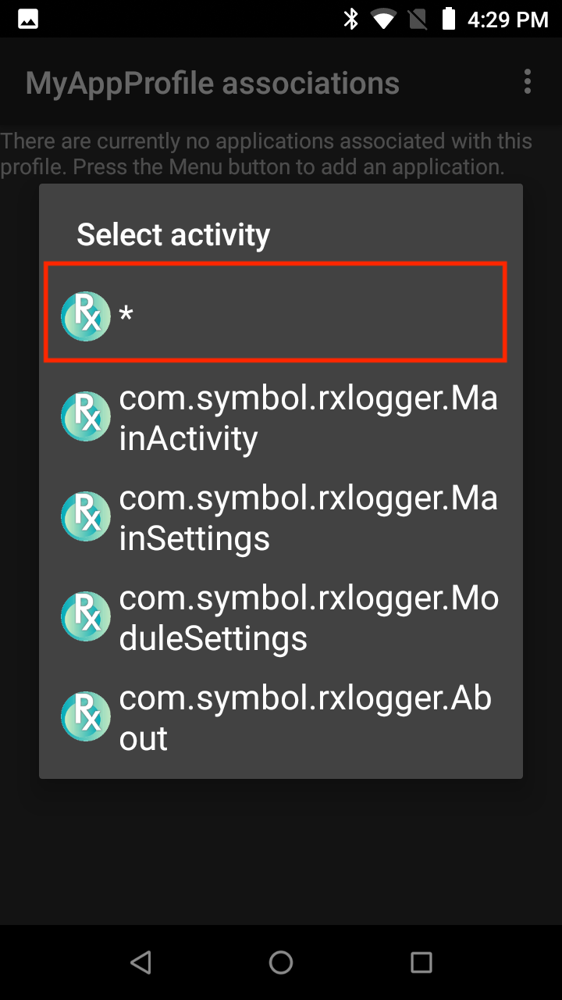

概述
DataWedge 可以与设备上的任何应用程序关联，并可调用来获取条码、磁条或其他数据，以使用指定方式处理数据，并将数据传递到一个或多个应用程序。因此，每个配置文件都必须指定这三项内容：
有关 DataWedge 配置文件的更多信息，请参阅体系结构概述。
创建新的配置文件
要创建新的配置文件（设备屏幕可能因设备系统和 DataWedge 版本而异）：
DataWedge 7.x 的启动器图标如下所示。找到 DataWedge 图标并轻触它以开始。
DataWedge 7.x 的启动器图标
在新安装中，DataWedge 配置文件屏幕与下图中的相似，显示包括的（可见）三个配置文件。白色文本指示已启用的配置文件。还显示不是开箱即用的第四个已禁用配置文件（灰色文本）。
注意：如果之前打开过 DataWedge，则它将重新打开到之前使用的最后一个屏幕。如有必要，请按“后退”，直至出现“配置文件”屏幕。
2.轻触“汉堡”菜单并选择 -> 新建配置文件。
3.输入新配置文件的名称，并轻触“确定”。将出现“配置文件”列表，类似于下面步骤 4 中的图像。
 Zebra 建议配置文件名称是唯一的，包含字母数字字符，长度较短，以避免可能出现的配置文件导入/导出问题。
Zebra 建议配置文件名称是唯一的，包含字母数字字符，长度较短，以避免可能出现的配置文件导入/导出问题。
将配置文件与应用程序和/或活动关联：
4.轻触要关联的配置文件：
5.从“配置文件”屏幕中，轻触“配置文件已启用”复选框以将其启用，然后轻触“关联的应用程序”将其与某个应用程序或活动链接：
6.轻触此菜单并选择 -> 新建应用程序/活动。将出现安装在设备上的所有应用程序和活动列表。
7.从设备应用程序/活动列表中，选择与正在编辑的配置文件关联的应用程序或活动。选择某个应用程序时，将显示其活动列表（请参阅“步骤 8”）。
8.从应用程序活动列表中，轻触星号将所有应用程序活动与配置文件关联，或轻触单个活动以仅将 DataWedge 用于特定活动：
9.该应用程序现已出现在“配置文件关联”列表中，如下所示。重复步骤 6 至步骤 9，直至所有所需应用程序和/或活动相关联。 添加完关联之后，请轻触“返回”按钮以返回到“配置文件”屏幕。
添加完关联之后，请轻触“返回”按钮以返回到“配置文件”屏幕。
配置用于输入、处理和输出的配置文件：
10.从“配置文件”屏幕中，启用所需的输入设备（如有必要，向下滚动）。例如，“条码输入”显示“扫描器选择”的选项：
11.从“扫描器选择”屏幕中，选择所需的扫描器或成像器。轻触“返回”以返回到“输入”屏幕。 注意：如上所示的多个列表仅显示正在配置的设备上存在的（或连接到设备）的设备。有关相关信息，请参阅“条码输入”指南中的扫描器选择。
注意：如上所示的多个列表仅显示正在配置的设备上存在的（或连接到设备）的设备。有关相关信息，请参阅“条码输入”指南中的扫描器选择。
12.从“解码器”屏幕中（可从“输入”屏幕访问），只选择应用程序所需的解码器以优化扫描性能。轻触“返回”以返回到“输入”屏幕。有关配置解码器参数的更多信息，请参阅条码输入指南。
13.从“配置文件”屏幕中，选择所需的输出方法（如有必要，向下滚动）。例如，下图显示已启用“按键输出”：
 |
注意：输出部分包含用于配置“基本数据格式”和“高级数据格式”的选择器。这些是数据处理选项。
14.选择“基本数据格式”以获得在收集的数据前面（前缀）和/或后面（后缀）插入特殊按键或添加文本的选项：
有关已获取数据处理的更多信息，请参阅基本数据格式和高级数据格式部分。
应用程序现在使用 DataWedge 获取条码数据。
编辑配置文件
要修改、重命名、删除或克隆配置文件：
1.长按配置文件名称以弹出其上下文菜单。
2.轻触所需操作：
还可通过在“配置文件”列表中轻触配置文件名称开始编辑配置文件。
相关指南：
- 配置文件体系结构概述 - 解释 DataWedge 如何使用配置文件
- 配置文件选项 - 所有 DataWedge 配置文件选项的链接和详细信息
- DataWedge API - 以编程方式访问 DataWedge